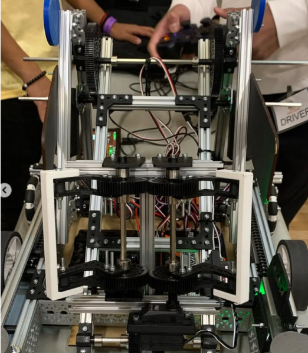

FIRST Tech Challenge — Co-Founder & Vice President · Nov 2023 – Jun 2024
FTC Robotics
Co-founded the FIRST Tech Challenge club with a friend and served as Vice President, coordinating meetings, building lesson plans, and teaching robotics and 3D modeling. Contributed mechanical assembly and sensor work on the competition robot.

Mechanical BuildSensorsRegionals
FTC Competition Robot
Contributed mechanical assembly, sensor placement, and built the paper airplane launcher mechanism. Also helped teach robotics and 3D modeling to club members. Competed at the regional level.
Mechanical BuildSensorsRegionals
FTC Competition Robot — Co-Founder & Vice President
Goal & Motivation
Co-founded the FIRST Tech Challenge club with a friend in November 2023 and served as Vice President through June 2024. The goal was to build a club from scratch, give students hands-on competitive robotics experience, and compete at the regional level. On the leadership side that meant setting up the club structure, coordinating meetings, building lesson plans, and teaching robotics and 3D modeling to members.
How I Fulfilled the Requirements
Contributed primarily to mechanical assembly and sensor placement on the robot. One of the main mechanisms I worked on was the paper airplane launcher, which needed to launch reliably and repeatedly under competition conditions. Also set up meetings, created lesson plans, and helped teach robotics fundamentals and 3D modeling to club members.
Results & Lessons Learned
The team competed at the regional level. It was good early experience building something that had to actually work on competition day, and teaching club members helped me get more comfortable explaining technical concepts.